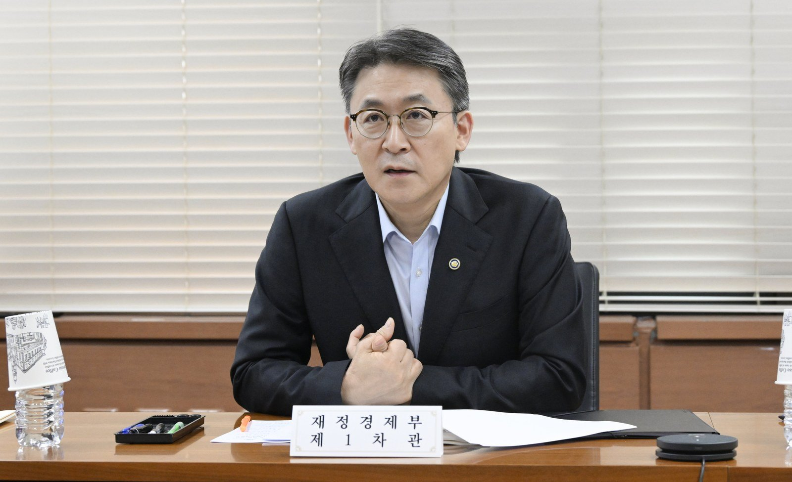
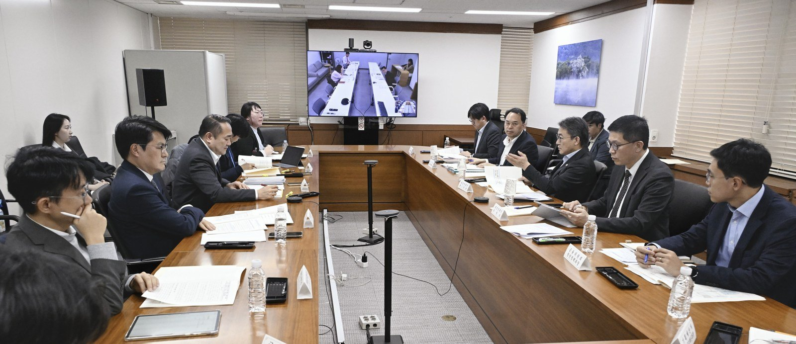

3분기 수출 증가분 87% 경기·충남, 소매판매는 13개 시도 감소
광공업생산 29.8% 늘어난 충북 고용률 1.0%포인트 하락
인천 6773명 순유입, 20대 고용률 2.2%포인트 하락
AI경제저널=김갑봉 기자 | 국가데이터처가 18일 「2026년 3/4분기 지역경제동향」을 냈다. 3분기 수출(통관 기준)은 3186억3000만달러(약 426조6000억원)로 1년 전보다 72.7% 늘었다. 늘어난 금액 1340억9000만달러(약 179조5000억원) 가운데 86.7%인 1161억9000만달러(약 155조6000억원)가 경기와 충남 두 곳에서 나왔다(비율은 연구소 계산). 원화 환산에는 11월 18일 한국은행 매매기준율(1달러 1338.8원)을 적용했다.
같은 기간 소매판매는 16개 시도 가운데 13곳에서 줄었다. 수출 증가분이 몰린 경기(-1.0%)와 충남(-1.7%)도 줄었다. 소비자물가는 모든 시도에서 올랐고, 고용률은 8개 시도에서 내렸다.

1. 수출 증가분 74%는 메모리 반도체
국가데이터처는 메모리 반도체, 컴퓨터 주변기기, 기타 석유제품 수출이 늘어 전체 수출이 증가했다고 밝혔다. 증가액은 메모리 반도체 989억5000만달러(약 132조5000억원), 컴퓨터 주변기기 145억6000만달러, 기타 석유제품 45억8000만달러다. 메모리 반도체 한 품목이 증가분의 73.8%를 차지했다(연구소 계산).
수출은 모든 시도에서 늘었다. 경기는 712억6000만달러 늘어 1173억2000만달러, 충남은 449억3000만달러 늘어 710억6000만달러를 기록했다. 두 곳이 나라 전체 수출에서 차지하는 비중은 1년 전 39.1%에서 59.1%로 올랐다(연구소 계산).
증가액 3위인 충북은 38억2000만달러, 가장 적은 강원은 2000만달러 늘었다. 인천은 12억9800만달러 늘어 168억2000만달러였다. 프로세스·컨트롤러(11억2400만달러)와 의약품(2억1900만달러)이 늘고 기타 일반기계류(-4억2500만달러)가 줄었다.
경기와 충남의 수출은 1년 새 각각 154.7%, 171.9% 늘었다(연구소 계산). 같은 기간 두 곳의 광공업생산은 2.4%, 4.5% 줄었다. 수출은 수출신고서에 적힌 제조자 사업장 소재지 기준 달러 금액이고, 광공업생산·소매판매는 물가 변동을 뺀 지수다. 한국은행 정희완 과장과 이재호 차장은 8월 31일 「BOK 이슈노트」를 냈다. 두 사람은 반도체 수출가격 급등에 따른 교역조건 개선으로 국내총소득이 올해 들어 두 자릿수 증가율을 나타내고 있다고 적었다.
2. 광공업생산 1위 충북, 고용률 하락 2위
광공업생산은 나라 전체에서 1.3% 늘었다. 충북(29.8%), 인천(9.5%), 부산(6.4%) 등 6개 시도에서 늘었다. 울산(-9.1%), 강원(-7.9%), 충남(-4.5%) 등 10개 시도는 줄었다. 충북은 반도체·전자부품과 전기장비 생산이 늘었다.
광공업생산이 가장 많이 늘어난 충북의 고용률은 1년 전보다 1.0%포인트 내렸다. 고용률이 내린 8개 시도 가운데 경북(-1.3%포인트) 다음으로 폭이 컸다. 30대가 3.7%포인트, 20대가 2.4%포인트 내렸다. 충북 소매판매는 3.4% 줄었다.
나라 전체 고용률은 63.4%로 0.1%포인트 내렸다. 50대·40대·30대는 올랐고 20대(-1.1%포인트)와 60대(-0.2%포인트)가 내렸다. 실업률은 2.2%로 1년 전과 같았지만 15~29세(0.8%포인트)와 60세 이상(0.1%포인트)은 올랐다.
수출 증가분이 몰린 충남의 고용률은 1.0%포인트 올라 제주(2.0%포인트)·세종(1.3%포인트) 다음으로 폭이 컸다. 30대가 3.4%포인트 올랐다. 경기 고용률은 0.1%포인트 내렸다.
3. 소매판매 13개 시도 감소, 물가는 모든 시도 상승
시도별 소매판매는 세종(-10.0%), 경남(-6.5%), 대구(-5.5%) 등 13곳이 줄었다. 세종은 승용차·연료소매점(-26.8%) 판매가 크게 줄었다. 증가한 곳은 백화점 판매가 늘어난 서울(0.7%)과 슈퍼마켓·잡화점·편의점 판매가 늘어난 인천(0.3%) 두 곳이고, 울산은 보합(0.0%)이었다. 무점포소매를 넣은 전체 소매판매는 0.5% 줄었다. 승용차·연료소매점(-7.5%)과 대형마트(-1.9%) 판매가 줄었다.
서비스업생산은 10개 시도에서 늘어 전체로 3.4% 증가했다.
소비자물가는 나라 전체에서 2.9% 올랐다. 나라 전체보다 높은 곳은 9개 시도, 낮은 곳은 7개 시도다. 충북·전북(3.4%)과 강원(3.3%)은 석유류와 외식 제외 개인서비스가 올랐다. 인천·대구(2.6%)와 서울(2.7%)은 농산물 등이 내렸다.
4. 인천, 생산·인구 늘고 20대 고용률 하락
인천 광공업생산은 9.5% 늘었다. 의약품(41.1%)과 기계·장비수리(149.2%)가 늘고 기계장비(-26.4%)와 고무·플라스틱(-13.3%)은 줄었다. 서비스업생산은 운수·창고(7.2%)와 예술·스포츠·여가(17.3%)가 늘어 3.8% 증가했다.
인천 소비자물가는 2.6% 올랐다. 농산물(-6.6%)은 내렸지만 석유류(14.6%)와 외식 제외 개인서비스(4.6%)가 올랐다. 소매판매는 자동차·연료소매업(-1.7%)과 대형마트(-2.6%)가 줄고 슈퍼마켓·잡화점·편의점(5.3%)과 면세점(1.0%)이 늘어 0.3% 증가했다.
인천 인구는 3분기 6773명 순유입이었다. 경기(1만62명) 다음으로 많다. 30대(30~34세 926명, 35~39세 763명)와 20대(870명)가 많이 들어왔다.
인천 고용률은 63.3%로 0.4%포인트 내렸다. 30대(2.0%포인트)와 50대(1.5%포인트)는 올랐고 20대(-2.2%포인트)와 40대(-1.6%포인트)가 내렸다. 인천 20대 고용률은 지난해 3분기(-5.5%포인트)와 올해 2분기(-3.8%포인트)에도 1년 전보다 낮았다.

5. 정부 「견조한 성장세」 평가와 연구기관 분석
한국은행은 10월 27일 3분기 실질 국내총생산(속보)이 직전 분기보다 1.0%, 1년 전보다 3.4% 성장했다고 발표했다. 실질 국내총소득은 1년 전보다 18.8% 늘었다. 민간소비는 재화와 서비스 소비가 모두 줄어 직전 분기보다 0.2% 감소했다.
재정경제부는 13일 「최근 경제동향(2026년 11월)」에서 견조한 성장세가 이어진다고 평가했다. 수출이 큰 폭 증가하고 투자 증가세가 확대되는 가운데 소비는 완만하게 개선된다고 봤다. 같은 자료에서 고유가에 따른 물가 상승 압력과 취약계층·부문의 어려운 고용 여건 등 민생부담 우려를 짚었다. 재정경제부 자료에 실린 국내총생산 기준 3분기 민간소비는 1년 전보다 1.1% 늘었다.
한국개발연구원(KDI)은 9일 「KDI 경제동향 2026.11」에서 우리 경제가 인공지능(AI) 인프라 투자 부문을 중심으로 양호한 성장을 이어 간다고 진단했다. 다만 반도체 호황에 따른 소득 증가 효과가 가계 전반으로 확산되는 흐름은 아직 뚜렷하지 않다고 분석했다. 고유가에 따른 가계 부담도 이어져 3분기 민간소비 증가율이 상대적으로 낮았다고 적었다.
정희완 과장과 이재호 차장의 「BOK 이슈노트」 제목은 「반도체 수혜지역의 소비는 어떻게 될까」다. 두 사람은 시군구 카드결제액(청구지 기준)으로 반도체 종사자가 많이 사는 고노출 지역(이천·화성·청주 등)을 분석했다. 이 지역 월별 소비는 성과급 지급 뒤 비노출 지역보다 최대 4% 정도 높았다. 두 사람은 반도체 호황이 이미 국내 소비에 「유의미한 긍정적 영향」을 미치고 있다고 평가했다.
두 사람은 이 지역들의 누적 소비 증가액이 지난해부터 올해 말까지 약 1조7000억원에 이를 것으로 추정했다. 삼성전자·SK하이닉스 성과급 효과만 반영하고 지금 흐름이 연말까지 이어진다고 본 값이다. 2025~2026년 연평균 증가액 8000억원은 지난해 민간소비 증가액의 2% 수준이다. 두 사람은 이 소비 증가가 국내총생산을 2025년 0.01%, 2026년 0.03% 높인 것으로 추정했다. 세후 성과급 대비 소비 증가액(소비파급률)은 2025년 27%, 2026년 21%다.
보고서는 성과급 지급 직후 이천시 거주자의 수도권 주택 매입이 크게 늘었다고 분석했다. 이천시 거주자의 동탄 지역 월평균 매입 건수는 전년의 약 2배였다. 보고서는 반도체 산업이 생산·취업유발효과가 상대적으로 작고 종사자 상당수가 소비성향이 낮은 고소득층이라 파급효과가 제한적일 것이라는 일각의 우려도 함께 소개했다.
보고서는 소재·부품·장비 생태계 강화, 늘어난 소득이 부동산으로 과도하게 유입되기보다 소비와 실물경제로 환류되는 여건, 중소기업·저소득층 지원이 함께 필요하다고 적었다. 보고서 내용은 한국은행 공식 견해가 아닌 집필자 견해다.
6. 정부 양극화 대응 TF 가동
정부는 11일 「양극화 대응 추진방향」을 발표하고 경제부총리를 팀장으로 하는 「양극화 대응 TF」를 꾸렸다. 작업반은 노동시장 이중구조, 산업·기업 격차, 지역 격차, 세대 격차, 사회 격차 다섯이다. 지역 격차완화반은 행정안전부·국토교통부 차관이 팀장을 맡는다.
18일 첫 회의를 연 세대반은 청년 생애초기 경제적 자립 지원, 중장년 고용·돌봄·노후준비 안전망 강화 등 네 과제를 논의했다. 권대영 제1차관은 세대반이 노동시장·산업·지역 등에서 나타나는 구조적 격차가 생애 전반에 어떻게 이어지는지 종합적으로 살피는 축이라고 말했다. 세대반은 11~12월 매주 한 번 회의를 열고, 정부는 연내 마련한 과제를 「2027년 경제성장전략」에 반영할 계획이다.
참고문헌
공식 발표자료
- 「2026년 3/4분기 지역경제동향」(보도자료), 국가데이터처, 2026.11.18., https://www.korea.kr/briefing/pressReleaseView.do?newsId=156789740
- 「2026년 3/4분기 실질 국내총생산(속보)」, 한국은행, 2026.10.27.(KDI 경제교육·정보센터 게재 요약), https://eiec.kdi.re.kr/policy/materialView.do?num=288583
- 「최근 경제동향(2026년 11월)」(보도참고), 재정경제부, 2026.11.13., https://www.korea.kr/briefing/pressReleaseView.do?newsId=156789113
- 「모두의 성장으로 대전환을 위해 전 부처 역량 결집 - 「양극화 대응 TF」 세대 격차 완화반 1차 회의 개최」(보도자료), 재정경제부, 2026.11.18., https://www.korea.kr/briefing/pressReleaseView.do?newsId=156789792
연구보고서
- 「KDI 경제동향 2026.11」, 한국개발연구원, 2026.11.9., https://www.kdi.re.kr/research/monTrends?pub_no=19322
- 정희완·이재호, 「반도체 수혜지역의 소비는 어떻게 될까: 지역 미시데이터로 살펴본 파급효과」(BOK 이슈노트 제2026-20호), 한국은행, 2026.8.31., https://www.bok.or.kr/portal/bbs/P0002353/view.do?menuNo=200433&nttId=11064279
사진 출처
- [사진1]·[사진2] 재정경제부 사진뉴스 「권대영 차관, 양극화 대응 TF 세대반 1차 회의 주재」, 2026.11.18., https://mofe.go.kr/nw/mosfnw/photoDetail.do?searchNttId1=MOSF_000000000079993&menuNo=4010400
※ 이 기사는 인공지능기자 위민아이(Wemin_AI)와 협력해 작성했습니다.
관련기사
- 지방 재정자주도 57.27%, 2016년 이후 최저
- 지역 중소·중견기업 보증부대출 1차 3조7400억원
- 한국지엠 10월 수출 4만9372대 28.4% 증가, 내수 799대
- IMF, 올해 한국 성장률 3.9%·추가 긴축 적절
저작권자 © AI경제저널 무단전재 및 재배포, AI학습 및 활용 금지